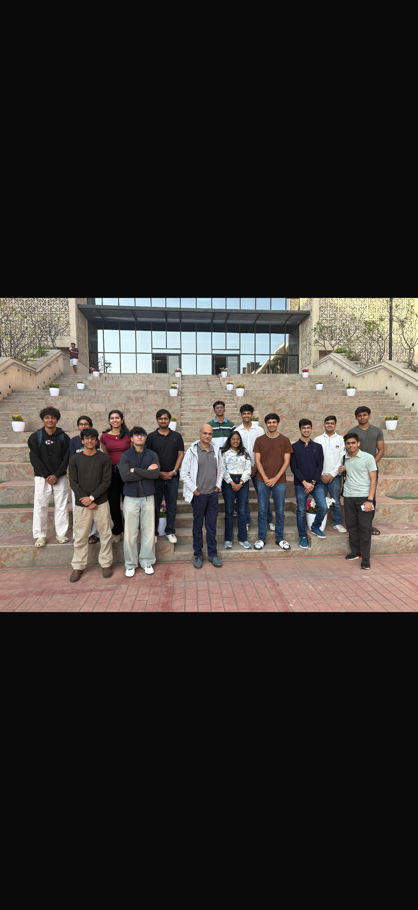
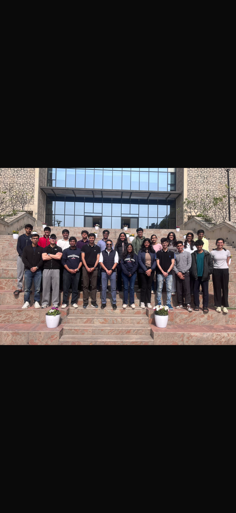

Not just managing a portfolio, but building an institution where the next generation doesn't need a PM like me — because the systems and culture will compound on their own.
Because I'm already doing the unglamorous version of this job — the midnight messages about CV cycles, the cold-DMs to fund managers, the belief that research starts at the grocery store, not the spreadsheet.
I've watched eight PMs — Avi, Kush, Soham, Aadya, Malhar, Aadi, Pranjal, Saniddhi — and absorbed something irreplaceable from each. Avi taught me to think out of the box: "Indian Companies might have a higher ROE than global cos. because they might be investing less in AI/R&D." Kush showed me the power of reaching out cold — his connections with Samit Vartak, Dushyant Mishra, Kshitij Kaji proved that a 20-year-old from RH4 can earn any seat if they lead with substance.
Across their tenures, through pitches on everything from Blue Jet to Action Construction's capex upcycle, I've developed an instinct for what separates a good pitch: the "so what."
The most important pitch I sat through at Bodhi — someone asked: "Why does a distributor with 131 warehouses and 89,000 SKUs even need a moat? Isn't distribution a commodity? 4% EBITDA margin business isn't having pricing power."
Not because I had the answer that day, but because I realized the PM's chair isn't about having answers — it's about engineering the quality of questions that a room full of smart 20-year-olds forgets to ask.
We have >55 analysts and stellar speaker lineups, yet attendance flags and pitch cycles sometimes feel like academic exercises rather than conviction-driven research. I've been the analyst pulling late nights on concalls and scuttlebutt, and I've also been the one wondering why we spend more time on SWOT slides than on understanding unit economics or talking to a company's dealers in Chandni Chowk.
That discomfort is precisely what qualifies me. I don't want to manage the portfolio from a spreadsheet; I want to manage it from the field — from factory floors in Panipat, from distributor offices in Manesar, from the annual reports that nobody reads past page 40.
I don't think the PM's job is to be the smartest person in the room. It's to be the most unreasonable one — unreasonable about research depth, unreasonable about asking "so what?" after every pitch slide, and unreasonable about ensuring every analyst leaves Bodhi Capital sharper than they entered.
I've built relationships with investors and professionals that most people would think are out of reach for an undergraduate, because I believe in showing up with substance before asking for anything.
Here's what most people get wrong about the PM role: they treat it like a promotion. When NYU Stern's IAG pitches to a board of professors and alumni with real accountability, or when Michigan's AIC runs semester-long PE and hedge fund competitions that turn theory into muscle memory, they're not just running clubs — they're running talent factories.
Bodhi Capital should aspire to be India's answer to that. Not a copycat, but something more ambitious: a fund that produces investors who think in first principles about Indian businesses, not just analysts who can fill a pitch template.
I've noticed our best moments happen when analysts are genuinely arguing, not presenting. That 15-minute Rategain disagreement taught me more than any speaker session. As PM, I'd make that productive friction the norm, not the exception.
Two interconnected visions: one for AIC as the club, one for Bodhi Capital as the fund. Turning AIC into a year-round institution that compounds knowledge, reputation, and capital.
Most speaker sessions follow the same tired format: a senior professional walks through their background, the audience nods politely, and everyone goes home having learned nothing they couldn't find in a Finshots article.
We send speakers a 2-page brief beforehand: "Here's our thesis on Entero Healthcare. We believe pharma distribution is consolidating towards 3-4 national players. Where are we wrong?" The session becomes a 45-minute deconstruction of OUR thinking.
Inspired by PPFAS's annual unitholders' meetings. We pick one industry per session and build a 20-minute visual breakdown (supply chain maps, margin waterfalls, competitive positioning). The output is a publishable, institutional-quality sector note.
A promoter or CFO pitches their company to us, and we play the investment committee. One per semester. "Come to Ashoka. You have 20 minutes to convince 40 undergraduates. Then we grill you for 70 minutes."
One per pitch cycle. The team identifies one person who knows their specific company better than anyone — a former employee, a competitor's ex-CXO, a regional dealer, a supplier. Professional calls cost $500-2,000 at GLG and Tegus. We get 30 minutes through student framing and genuine interest.
The people who would benefit us most — single-GP fund managers, boutique PMS founders, fintwit operators — are chronically short on research bandwidth. Firms with 1-3 professionals managing 30 Cr to 500 Cr simply cannot cover as many names as they want to.
"We have a team of 4 analysts available for a 3-week scoped research project. Here is the exact deliverable."
An analyst at a boutique PMS costs 4-6 lakh/year. A team of 4 Bodhi analysts for 3 weeks costs zero. Every analyst gets: a real reference letter, co-authored research, a working relationship with a professional investor.
8-10 teams from SRCC, St. Stephens, Hansraj, IIT-D, ISB, Sukhdev. Modeled after Michigan's ENGAGE Conference and McGill Global Stock Pitch Competition. Indian-listed companies only. Nobody in India runs a dedicated, prestigious undergraduate stock-pitch competition with real judges from real firms.
Modeled after the Tamil Nadu Investors Association's Bullet Proof and 20-20 Ideas Summit. Quarterly Saturday afternoon event, open to Delhi-NCR, with 3-4 speakers each presenting one investment idea in 15 minutes.
One sector, chosen jointly. Each club pitches one stock. Each side's IC evaluates the other's work. FIC SRCC already publishes VITTA. We coordinate a joint sector report.
Create @BodhiCapital: short thesis threads, quarterly results commentary, supply chain explainers. Be the first student club to post institutional-quality results commentary within 24 hours of a small-cap reporting.
Tracks monthly operational data that moves small-cap stocks:
The problem isn't slow analysts — it's that the first 3 weeks are wasted on stock selection anxiety.
For every pitch, one DA team (assigned 1 week before) submits 3-5 challenge questions with supporting research. Modeled on Pixar's Braintrust, Bridgewater's radical transparency, and Sequoia's Monday partner meetings.
Every semester: 2-3 comprehensive 15-20 page sector studies by 6-8 analysts over 8 weeks.
Each Atlas is simultaneously published IP, a sellable artefact, a speaker outreach calling card, and research foundation for future pitches.
Utpal Sheth of RARE Enterprises: "When the thesis or root cause changes, sell irrespective of valuations." Our Quarterly Board Meeting asks: is this company still a gorilla? If it has become a monkey, we exit.
Small-cap as formal identity. Samit Vartak: "30% of small-cap companies are growing gross block by 20%. Only 18% of large-caps are." Median debt-equity fallen from 0.62 (2008) to 0.13 (Sep 2025).
5-10% of realised gains goes to Ashoka's financial aid fund or a Sonipat-based NGO. Modeled after Trinity College Dublin's Student Managed Fund (€700K+ AUM, donates ~10%) and Dartmouth's DIPP ($850K portfolio, donated $125,000+). Unique among every Indian college investment club.
Bodhi Capital's central nervous system — built in the first month:
Input: two PDFs (Senco Gold FY23 and FY24). Output: every material change. Built with Python + Claude API. Saves 6-8 hours per pitch cycle. Integrates the Loughran-McDonald financial sentiment dictionary (Journal of Finance, 2011) to flag language shifts signaling changing management confidence.
Nassim Taleb: "Via negativa is more powerful and less error-prone than via positiva."
Dedicated Notion page aggregating internship openings, full-time roles, research projects, and analyst programs at PMS firms and AIFs. Every member who lands a role does a 15-minute "how I got this" session.
Annual "Mumbai Trek" — 3 days of office visits to 4-5 firms: a PMS like Marcellus or Alchemy, a sell-side desk at Kotak or IIFL, a quant firm like WorldQuant's Mumbai office, and an AIF or VC fund.
Structured 2-3 month "analyst apprenticeships" with small PMS firms (sub-500 Cr AUM) — 10 hours/week in exchange for mentorship and a formal reference. 3-4 firms per semester. No other Indian college club does this systematically.
Before assessing business quality, run the forensic screen. Cash flow conversion (EBITDA to OCF, 3+ years). Related-party transactions as % of profits (not revenues — Tibrewal's insight). Auditor changes. Promoter pledges. Contingent liabilities. The CLEAR framework from Carnelian applied as a pre-filter. I call it the "coffin screen."
Pricing power (stable/expanding gross margins). Industry structure consolidating. Market share gains. Return on incremental capital above 15%. A company with 12% ROE but 25% return on incremental capital is far more interesting than 20% ROE with 12% incremental return.
Four dimensions: Integrity (honest with minority shareholders). Capital Allocation (sensible deployment of retained earnings). Skin in the Game (open market purchases are the strongest signal). Communication (underpromise and overdeliver?).
Reasonable price relative to normalized earnings power. Multi-faceted: PE, PB, EV/EBITDA, DCF, PEG. But missing a great business at 22x because your target was 18x is worse than paying 22x for a business that earns its way into 12x over three years.
Taught me where to look: boring, under-researched companies that institutional investors ignore. His stock classification — fast growers, cyclicals, turnarounds — sharpened how I think about what I own. His "kicking the tires" — visiting stores, talking to customers — is not sophisticated. It is also not common.
"The best stock to buy may be the one you already own." That single sentence changed how I think about portfolio management.
Taught me what to look for: understandable business, favorable long-term economics, trustworthy management, sensible price. His See's Candies near-miss taught me not to let valuation orthodoxy blind me. His Dexter Shoe disaster ($433M in Berkshire stock for a worthless business, real cost $3.5B) taught me how you fund an investment matters as much as what you invest in.
"At other times, I've made mistakes when assessing the abilities or fidelity of the managers Berkshire is hiring. The fidelity disappointments can hurt beyond their financial impact, a pain that can approach that of a failed marriage."
His PB-to-returns analysis: PB explains just 6% of returns over 1 year (coin-flip), 25% over 5 years, and 75% over 10 years. His October 2024 finding: cyclicals outperformed quality stocks (18% vs 16% CAGR over BJP decade). His critical conclusion: "Earnings growth is the best defensive strategy available to an investor."
At TIA Bullet Proof 2025, his Sanskrit framework: Sravana (gathering knowledge), Manana (reflecting, questioning), Nidhidhyasana (maintaining conviction). "If you jump from Sravana to Nidhidhyasana without Manana, then it is terminal."
In January 2026 — during a brutal correction (median BSE 500 down 16.3%, India-Pakistan war, 50% US tariffs, $23B FII outflow) — Vartak showed that every 20%+ Jan-Mar drawdown since 2009 bounced back an average of 64% within the fiscal year. Nine instances.
BMV (Business, Management, Valuation) framework. ~20 concentrated businesses. Median market cap shifted from Rs 7,200 Cr (Oct 2023) to Rs 3,600 Cr (Apr 2025). Target: 16-18% CAGR.
His dairy investment: bought during margin compression when most were selling, because scuttlebutt showed volumes inflecting. Stock moved 200% in a year. His maize processing exit after unwanted 25% equity dilution: "A good business run by a bad promoter is a bad investment. Period."
Intellectual honesty embodied. Requires minimum 5-year investment outlook. During underperformance: "We are not superheroes and we do not have mythical powers. Just because we have bought a stock does not mean it immediately starts to go up."
Think at the industry level first. Identify sectors where capacity is tight, demand is accelerating, and industry structure favors the survivors. The consolidators win twice: once from the industry tailwind, and again from share gains within the industry.
The CLEAR forensic framework: Cash flow, Liability, Earnings quality, Asset quality, Related party & governance. Also the distinction between "Magic" stocks (explosive returns from earnings + re-rating) and "Compounders" (steady-state, sustainable moat, robust FCF). Quality compounders had worst 3-year rolling drawdown of -11.8% vs -38.7% for benchmark.
"Teji mai paisa banata hai, mandi me fund manager ijjat banata hai." You make money in bull markets, but earn reputation in bear markets by avoiding landmines.
"In Bullet Proof investing, the process of elimination is more important than the process of selection." Most investors start with a positive screen. The elimination approach inverts it: find what's wrong first.
Most Indian PMS operators fall into one camp. I do both, sequentially. First, identify the structural catalyst. Then apply the forensic screen. This eliminates the top-down investor who buys the right theme in the wrong company, and the bottom-up investor who buys a good company in a dying industry.
Most investors run forensics after they've decided they like a company. That is backwards. Confirmation bias means you'll dismiss red flags if you've already fallen in love with the growth story.
If 6 out of 10 positions work and winners return 3-5x, while 4 losers average 30-40% losses, the portfolio return is spectacular. Winners grow without limit while losers are capped. The asymmetry is structural. A good process, applied consistently over decades, is more valuable than any single brilliant insight. The insight fades. The process compounds.
From WhatsApp debates at midnight to national media coverage — the unconventional sources that shape how I think about investing.
We invest in small emerging companies. Microcap companies evolve in different ways. Not all of them are good ways. We can't say at the beginning, "I'm going to hold this stock for 1-5-10-40 years". No, we are going to hold it as long as management executes and constantly compare them against other opportunities.
We might hold them 3 months, or it could be 10 years. If I'm being honest, often times companies only deserve to be rented. Ownership is earned. The quickest way to go broke in microcap is buy and forget. Buy and hold forever only works if management executes forever.
Beyond finance, my intellectual curiosity spans domains — from anti-ageing research to investment philosophy. The same first-principles thinking that drives scientific inquiry is what I bring to equity research.
Read the full article →55+ analysts united by the belief that undergraduate investors can produce institutional-quality research.

